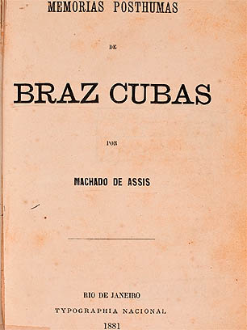

Brás Cubas
Machado de Assis
Página 2

Machado de Assis
Joaquim Maria Machado de Assis (Rio de Janeiro, 21 de junho de 1839 – Rio de Janeiro, 29 de setembro de 1908) foi um escritor brasileiro, amplamente reconhecido por críticos, estudiosos, escritores e leitores como o maior expoente da literatura brasileira.
Dedicatória:
"Ao verme que primeiro roeu as frias carnes do meu cadáver dedico como saudosa lembrança estas memórias póstumas."
